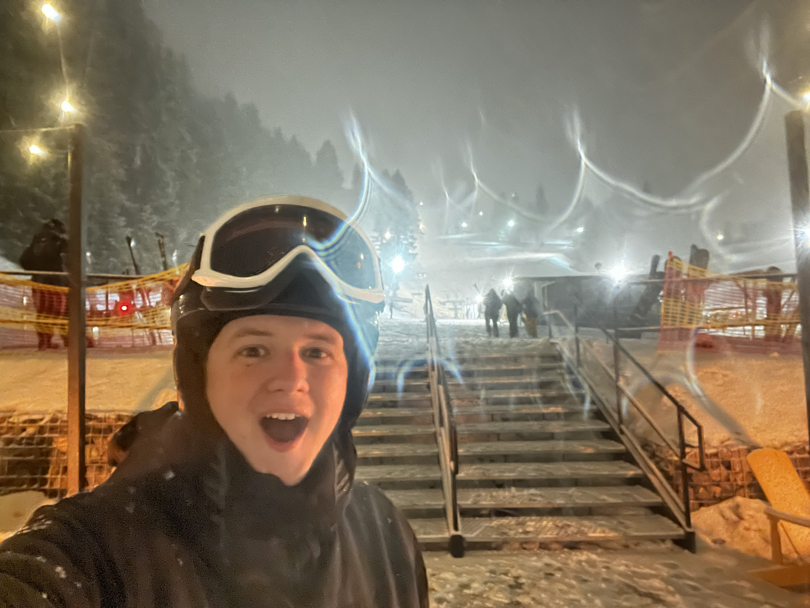
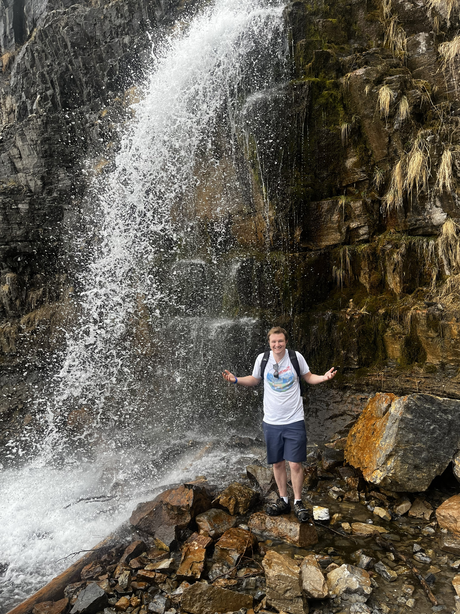

What I Love Doing
These are some of the things that keep me energized and excited:
-
Exploring the mountains
- Running on local trails
- Hiking to waterfalls and viewpoints
- Visiting as many national parks as possible
- Skiing on winter nights and powder days
- Building detailed LEGO creations
- Watching and supporting BYU sports
Some Favorite Moments


Video Inspiration
I’m especially inspired by the beauty and variety of the national parks. Here’s a video documenting a backpacking trip I took to Yosemite in 2021.
National Park Trivia App
I love the national parks, and one of my bucket list goals is to visit them all. Click the button below to generate a random national park trivia fact.
Click the button to see a trivia fact about U.S. national parks!
Tracking the National Parks
This interactive Tableau visualization highlights the U.S. national parks—perfect for planning future adventures and checking them off the bucket list.